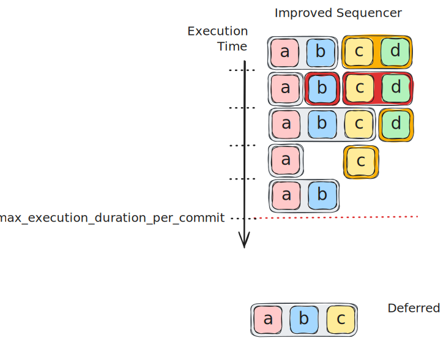

<!DOCTYPE HTML>
<html lang="en" class="light sidebar-visible" dir="ltr">
    <head>
        <!-- Book generated using mdBook -->
        <meta charset="UTF-8">
        <title>The Iota Improvement Proposal (IIP) Book</title>
        <meta name="robots" content="noindex">


        <!-- Custom HTML head -->

        <meta name="description" content="">
        <meta name="viewport" content="width=device-width, initial-scale=1">
        <meta name="theme-color" content="#ffffff">

        <link rel="icon" href="favicon-de23e50b.svg">
        <link rel="shortcut icon" href="favicon-8114d1fc.png">
        <link rel="stylesheet" href="css/variables-8adf115d.css">
        <link rel="stylesheet" href="css/general-2459343d.css">
        <link rel="stylesheet" href="css/chrome-ae938929.css">
        <link rel="stylesheet" href="css/print-9e4910d8.css" media="print">

        <!-- Fonts -->
        <link rel="stylesheet" href="fonts/fonts-9644e21d.css">

        <!-- Highlight.js Stylesheets -->
        <link rel="stylesheet" id="mdbook-highlight-css" href="highlight-493f70e1.css">
        <link rel="stylesheet" id="mdbook-tomorrow-night-css" href="tomorrow-night-4c0ae647.css">
        <link rel="stylesheet" id="mdbook-ayu-highlight-css" href="ayu-highlight-3fdfc3ac.css">

        <!-- Custom theme stylesheets -->


        <!-- Provide site root and default themes to javascript -->
        <script>
            const path_to_root = "";
            const default_light_theme = "light";
            const default_dark_theme = "navy";
            window.path_to_searchindex_js = "searchindex-7387b4d0.js";
        </script>
        <!-- Start loading toc.js asap -->
        <script src="toc-19486074.js"></script>
    </head>
    <body>
    <div id="mdbook-help-container">
        <div id="mdbook-help-popup">
            <h2 class="mdbook-help-title">Keyboard shortcuts</h2>
            <div>
                <p>Press <kbd>←</kbd> or <kbd>→</kbd> to navigate between chapters</p>
                <p>Press <kbd>S</kbd> or <kbd>/</kbd> to search in the book</p>
                <p>Press <kbd>?</kbd> to show this help</p>
                <p>Press <kbd>Esc</kbd> to hide this help</p>
            </div>
        </div>
    </div>
    <div id="mdbook-body-container">
        <!-- Work around some values being stored in localStorage wrapped in quotes -->
        <script>
            try {
                let theme = localStorage.getItem('mdbook-theme');
                let sidebar = localStorage.getItem('mdbook-sidebar');

                if (theme.startsWith('"') && theme.endsWith('"')) {
                    localStorage.setItem('mdbook-theme', theme.slice(1, theme.length - 1));
                }

                if (sidebar.startsWith('"') && sidebar.endsWith('"')) {
                    localStorage.setItem('mdbook-sidebar', sidebar.slice(1, sidebar.length - 1));
                }
            } catch (e) { }
        </script>

        <!-- Set the theme before any content is loaded, prevents flash -->
        <script>
            const default_theme = window.matchMedia("(prefers-color-scheme: dark)").matches ? default_dark_theme : default_light_theme;
            let theme;
            try { theme = localStorage.getItem('mdbook-theme'); } catch(e) { }
            if (theme === null || theme === undefined) { theme = default_theme; }
            const html = document.documentElement;
            html.classList.remove('light')
            html.classList.add(theme);
            html.classList.add("js");
        </script>

        <input type="checkbox" id="mdbook-sidebar-toggle-anchor" class="hidden">

        <!-- Hide / unhide sidebar before it is displayed -->
        <script>
            let sidebar = null;
            const sidebar_toggle = document.getElementById("mdbook-sidebar-toggle-anchor");
            if (document.body.clientWidth >= 1080) {
                try { sidebar = localStorage.getItem('mdbook-sidebar'); } catch(e) { }
                sidebar = sidebar || 'visible';
            } else {
                sidebar = 'hidden';
                sidebar_toggle.checked = false;
            }
            if (sidebar === 'visible') {
                sidebar_toggle.checked = true;
            } else {
                html.classList.remove('sidebar-visible');
            }
        </script>

        <nav id="mdbook-sidebar" class="sidebar" aria-label="Table of contents">
            <!-- populated by js -->
            <mdbook-sidebar-scrollbox class="sidebar-scrollbox"></mdbook-sidebar-scrollbox>
            <noscript>
                <iframe class="sidebar-iframe-outer" src="toc.html"></iframe>
            </noscript>
            <div id="mdbook-sidebar-resize-handle" class="sidebar-resize-handle">
                <div class="sidebar-resize-indicator"></div>
            </div>
        </nav>

        <div id="mdbook-page-wrapper" class="page-wrapper">

            <div class="page">
                <div id="mdbook-menu-bar-hover-placeholder"></div>
                <div id="mdbook-menu-bar" class="menu-bar sticky">
                    <div class="left-buttons">
                        <label id="mdbook-sidebar-toggle" class="icon-button" for="mdbook-sidebar-toggle-anchor" title="Toggle Table of Contents" aria-label="Toggle Table of Contents" aria-controls="mdbook-sidebar">
                            <span class=fa-svg><svg xmlns="http://www.w3.org/2000/svg" viewBox="0 0 448 512"><!--! Font Awesome Free 6.2.0 by @fontawesome - https://fontawesome.com License - https://fontawesome.com/license/free (Icons: CC BY 4.0, Fonts: SIL OFL 1.1, Code: MIT License) Copyright 2022 Fonticons, Inc. --><path d="M0 96C0 78.3 14.3 64 32 64H416c17.7 0 32 14.3 32 32s-14.3 32-32 32H32C14.3 128 0 113.7 0 96zM0 256c0-17.7 14.3-32 32-32H416c17.7 0 32 14.3 32 32s-14.3 32-32 32H32c-17.7 0-32-14.3-32-32zM448 416c0 17.7-14.3 32-32 32H32c-17.7 0-32-14.3-32-32s14.3-32 32-32H416c17.7 0 32 14.3 32 32z"/></svg></span>
                        </label>
                        <button id="mdbook-theme-toggle" class="icon-button" type="button" title="Change theme" aria-label="Change theme" aria-haspopup="true" aria-expanded="false" aria-controls="mdbook-theme-list">
                            <span class=fa-svg><svg xmlns="http://www.w3.org/2000/svg" viewBox="0 0 576 512"><!--! Font Awesome Free 6.2.0 by @fontawesome - https://fontawesome.com License - https://fontawesome.com/license/free (Icons: CC BY 4.0, Fonts: SIL OFL 1.1, Code: MIT License) Copyright 2022 Fonticons, Inc. --><path d="M371.3 367.1c27.3-3.9 51.9-19.4 67.2-42.9L600.2 74.1c12.6-19.5 9.4-45.3-7.6-61.2S549.7-4.4 531.1 9.6L294.4 187.2c-24 18-38.2 46.1-38.4 76.1L371.3 367.1zm-19.6 25.4l-116-104.4C175.9 290.3 128 339.6 128 400c0 3.9 .2 7.8 .6 11.6c1.8 17.5-10.2 36.4-27.8 36.4H96c-17.7 0-32 14.3-32 32s14.3 32 32 32H240c61.9 0 112-50.1 112-112c0-2.5-.1-5-.2-7.5z"/></svg></span>
                        </button>
                        <ul id="mdbook-theme-list" class="theme-popup" aria-label="Themes" role="menu">
                            <li role="none"><button role="menuitem" class="theme" id="mdbook-theme-default_theme">Auto</button></li>
                            <li role="none"><button role="menuitem" class="theme" id="mdbook-theme-light">Light</button></li>
                            <li role="none"><button role="menuitem" class="theme" id="mdbook-theme-rust">Rust</button></li>
                            <li role="none"><button role="menuitem" class="theme" id="mdbook-theme-coal">Coal</button></li>
                            <li role="none"><button role="menuitem" class="theme" id="mdbook-theme-navy">Navy</button></li>
                            <li role="none"><button role="menuitem" class="theme" id="mdbook-theme-ayu">Ayu</button></li>
                        </ul>
                        <button id="mdbook-search-toggle" class="icon-button" type="button" title="Search (`/`)" aria-label="Toggle Searchbar" aria-expanded="false" aria-keyshortcuts="/ s" aria-controls="mdbook-searchbar">
                            <span class=fa-svg><svg xmlns="http://www.w3.org/2000/svg" viewBox="0 0 512 512"><!--! Font Awesome Free 6.2.0 by @fontawesome - https://fontawesome.com License - https://fontawesome.com/license/free (Icons: CC BY 4.0, Fonts: SIL OFL 1.1, Code: MIT License) Copyright 2022 Fonticons, Inc. --><path d="M416 208c0 45.9-14.9 88.3-40 122.7L502.6 457.4c12.5 12.5 12.5 32.8 0 45.3s-32.8 12.5-45.3 0L330.7 376c-34.4 25.2-76.8 40-122.7 40C93.1 416 0 322.9 0 208S93.1 0 208 0S416 93.1 416 208zM208 352c79.5 0 144-64.5 144-144s-64.5-144-144-144S64 128.5 64 208s64.5 144 144 144z"/></svg></span>
                        </button>
                    </div>

                    <h1 class="menu-title">The Iota Improvement Proposal (IIP) Book</h1>

                    <div class="right-buttons">
                        <a href="print.html" title="Print this book" aria-label="Print this book">
                            <span class=fa-svg id="print-button"><svg xmlns="http://www.w3.org/2000/svg" viewBox="0 0 512 512"><!--! Font Awesome Free 6.2.0 by @fontawesome - https://fontawesome.com License - https://fontawesome.com/license/free (Icons: CC BY 4.0, Fonts: SIL OFL 1.1, Code: MIT License) Copyright 2022 Fonticons, Inc. --><path d="M128 0C92.7 0 64 28.7 64 64v96h64V64H354.7L384 93.3V160h64V93.3c0-17-6.7-33.3-18.7-45.3L400 18.7C388 6.7 371.7 0 354.7 0H128zM384 352v32 64H128V384 368 352H384zm64 32h32c17.7 0 32-14.3 32-32V256c0-35.3-28.7-64-64-64H64c-35.3 0-64 28.7-64 64v96c0 17.7 14.3 32 32 32H64v64c0 35.3 28.7 64 64 64H384c35.3 0 64-28.7 64-64V384zm-16-88c-13.3 0-24-10.7-24-24s10.7-24 24-24s24 10.7 24 24s-10.7 24-24 24z"/></svg></span>
                        </a>

                    </div>
                </div>

                <div id="mdbook-search-wrapper" class="hidden">
                    <form id="mdbook-searchbar-outer" class="searchbar-outer">
                        <div class="search-wrapper">
                            <input type="search" id="mdbook-searchbar" name="searchbar" placeholder="Search this book ..." aria-controls="mdbook-searchresults-outer" aria-describedby="searchresults-header">
                            <div class="spinner-wrapper">
                                <span class=fa-svg id="fa-spin"><svg xmlns="http://www.w3.org/2000/svg" viewBox="0 0 512 512"><!--! Font Awesome Free 6.2.0 by @fontawesome - https://fontawesome.com License - https://fontawesome.com/license/free (Icons: CC BY 4.0, Fonts: SIL OFL 1.1, Code: MIT License) Copyright 2022 Fonticons, Inc. --><path d="M304 48c0-26.5-21.5-48-48-48s-48 21.5-48 48s21.5 48 48 48s48-21.5 48-48zm0 416c0-26.5-21.5-48-48-48s-48 21.5-48 48s21.5 48 48 48s48-21.5 48-48zM48 304c26.5 0 48-21.5 48-48s-21.5-48-48-48s-48 21.5-48 48s21.5 48 48 48zm464-48c0-26.5-21.5-48-48-48s-48 21.5-48 48s21.5 48 48 48s48-21.5 48-48zM142.9 437c18.7-18.7 18.7-49.1 0-67.9s-49.1-18.7-67.9 0s-18.7 49.1 0 67.9s49.1 18.7 67.9 0zm0-294.2c18.7-18.7 18.7-49.1 0-67.9S93.7 56.2 75 75s-18.7 49.1 0 67.9s49.1 18.7 67.9 0zM369.1 437c18.7 18.7 49.1 18.7 67.9 0s18.7-49.1 0-67.9s-49.1-18.7-67.9 0s-18.7 49.1 0 67.9z"/></svg></span>
                            </div>
                        </div>
                    </form>
                    <div id="mdbook-searchresults-outer" class="searchresults-outer hidden">
                        <div id="mdbook-searchresults-header" class="searchresults-header"></div>
                        <ul id="mdbook-searchresults">
                        </ul>
                    </div>
                </div>

                <!-- Apply ARIA attributes after the sidebar and the sidebar toggle button are added to the DOM -->
                <script>
                    document.getElementById('mdbook-sidebar-toggle').setAttribute('aria-expanded', sidebar === 'visible');
                    document.getElementById('mdbook-sidebar').setAttribute('aria-hidden', sidebar !== 'visible');
                    Array.from(document.querySelectorAll('#mdbook-sidebar a')).forEach(function(link) {
                        link.setAttribute('tabIndex', sidebar === 'visible' ? 0 : -1);
                    });
                </script>

                <div id="mdbook-content" class="content">
                    <main>
                        <p></p>
<h1 id="iota-improvement-proposal-iip-repository"><a class="header" href="#iota-improvement-proposal-iip-repository">IOTA Improvement Proposal (IIP) Repository</a></h1>
<p>IIPs are improvement proposals for bettering the IOTA technology stack.</p>
<p>Building the IOTA ecosystem is a community effort, therefore we welcome anyone to propose, discuss and debate ideas that will later become formalized IIPs.</p>
<h2 id="propose-new-ideas"><a class="header" href="#propose-new-ideas">Propose new ideas</a></h2>
<p>Do you have an idea how to improve the IOTA technology stack?</p>
<ul>
<li>Head over to the <a href="https://github.com/iotaledger/iips/discussions">discussions</a> page to browse already submitted ideas or share yours!</li>
<li>Once your idea is discussed, you can submit a draft IIP (<a href="https://github.com/iotaledger/iips/blob/main/TEMPLATE.md">template here</a> as a PR to the repository.</li>
<li>You will receive feedback from the IIP Editors, core devs and community members to refine your proposal.</li>
<li>Once accepted, your IIP is merged as Draft.</li>
<li>It is your responsibility to drive its implementation and to present a clear plan on how the new feature will be adopted by the network.</li>
<li>Once implementation is ready and testing yields satisfactory result, the IIP becomes Proposed.</li>
<li>Proposed IIPs that are supported by majority of the network become Active.</li>
</ul>
<p>You may find more information about the IIP Process in <a href="#iip-1-iip-process">IIP-1</a>.</p>
<h2 id="list-of-iips"><a class="header" href="#list-of-iips">List of IIPs</a></h2>
<ul>
<li>Last updated: 2026-02-09</li>
<li>The <em>Status</em> of a IIP reflects its current state with respect to its progression to being supported on the IOTA Mainnet.
<ul>
<li><code>Draft</code> IIPs are work in progress. They may or may not have a working implementation on a testnet.</li>
<li><code>Proposed</code> IIPs are demonstrated to have a working implementation on the IOTA Devnet or Testnet.</li>
<li><code>Active</code> IIPs are supported on the IOTA Mainnet.</li>
<li><code>Replaced</code> IIPs have been replaced by a newer IIP.</li>
<li><code>Obsolete</code> IIPs are no longer in use.</li>
</ul>
</li>
</ul>
<p></p>
<div class="table-wrapper">
<table>
<thead>
<tr><th>#</th><th>Title</th><th>Description</th><th>Type</th><th>Layer</th><th>Status</th></tr>
</thead>
<tbody>
<tr><td>1</td><td><a href="#iip-1-iip-process">IIP Process</a></td><td>Purpose and guidelines of the contribution framework</td><td>Process</td><td>-</td><td>Active</td></tr>
<tr><td>2</td><td><a href="#iip-2-starfish-consensus-protocol">Starfish Consensus Protocol</a></td><td>A DAG-based consensus protocol improving liveness and efficiency</td><td>Standards</td><td>Core</td><td>Draft</td></tr>
<tr><td>3</td><td><a href="#iip-3-sequencer-improvements">Sequencer Improvements</a></td><td>Improved sequencing algorithm for reducing the number of transaction cancellations</td><td>Standards</td><td>Core</td><td>Active</td></tr>
<tr><td>5</td><td><a href="#iip-5-move-view-functions">Move View Functions</a></td><td>A standardized interface for application-specific queries to on-chain state</td><td>Standards</td><td>Interface</td><td>Draft</td></tr>
<tr><td>7</td><td><a href="#motivation-4">Validator Scoring Mechanism</a></td><td>An automated and standardized system for monitoring validator behavior and scores</td><td>Standards</td><td>Core</td><td>Draft</td></tr>
<tr><td>8</td><td><a href="#iip-8-dynamic-minimum-commission-based-on-the-validators-voting-power-per-epoch">Dynamic Minimum Commission based on the Validator’s Voting Power per Epoch</a></td><td>A dynamic minimum validator commission rate set to the validator’s voting power percentage to prevent stake hoarding and promote decentralization</td><td>Standards</td><td>Core</td><td>Draft</td></tr>
</tbody>
</table>
</div>
<h2 id="need-help"><a class="header" href="#need-help">Need help?</a></h2>
<p>If you want to get involved in the community, need help getting started, have any issues related to the repository or just want to discuss blockchain, distributed ledgers, and IoT with other people, feel free to join our <a href="https://discord.gg/iota-builders">IOTA Builder Discord</a>.</p>
<div style="break-before: page; page-break-before: always;"></div>
<h1 id="iip-1-iip-process"><a href="#iip-1-iip-process" class="header">IIP-1 IIP Process</a></h1>
<pre>
iip: 1
title: IIP Process
description:  Purpose and guidelines of the contribution framework
author: Levente Pap (@lzpap) <levente.pap@iota.org>
discussions-to: https://github.com/iotaledger/iips/discussions
status: Active
type: Process
created: 2025-02-12

<h2 id="abstract"><a class="header" href="#abstract">Abstract</a></h2>
<p>An IOTA Improvement Proposal (IIP) is a design document providing information to the IOTA community, or describing a new feature for IOTA or its processes or environment. The IIP should provide a high level technical design or specification and the rationale of the feature.</p>
<p>IIPs are the primary mechanism for proposing new features and standards to the IOTA protocol and related applications, furthermore for collecting input from the wider community and documenting the design decisions that go into the IOTA technology.</p>
<p>IIPs are maintained as text files inside the repository, therefore the history and evolution of protocol features are transparent and well documented.</p>
<p>This IIP defines the IIP Process itself to establish a common way of working.</p>
<h2 id="motivation"><a class="header" href="#motivation">Motivation</a></h2>
<p>The motivation of this IIP is to create a public platform to discuss improvement ideas related to the IOTA technology and define an easy-to-follow process of contributing to their development and implementation.</p>
<h2 id="design--specification"><a class="header" href="#design--specification">Design / Specification</a></h2>
<h3 id="iip-types"><a class="header" href="#iip-types">IIP Types</a></h3>
<p>There are 3 types of IIPs:</p>
<ul>
<li>A <strong>Standards Track IIP</strong> describes any change that affects most or all IOTA node implementations, such as a change to the network protocol, a change in transaction validity rules, or any change or addition that affects the interoperability of applications using IOTA. Standards Track IIPs consist of two parts, a design document and a reference implementation. Standards Track IIPs can be broken down into following layers:
<ol>
<li><strong>Core</strong>: Changes or additions to core features of IOTA, including consensus, execution, storage, and account signatures</li>
<li><strong>Networking</strong>: Changes or additions to IOTA’s mempool or network protocols</li>
<li><strong>Interface</strong>: Changes or additions to RPC or API specifications or lower-level naming conventions</li>
<li><strong>Framework</strong>: Changes or additions to IOTA Move contracts and primitives included within the codebase, such as within the IOTA Framework</li>
<li><strong>Application</strong>: Proposals of new IOTA Move standards or primitives that would not be included within the IOTA codebase but are of significant interest to the developer community</li>
</ol>
</li>
<li>An <strong>Informational IIP</strong> describes an IOTA design issue, or provides general guidelines or information to the IOTA community, but does not propose a new feature. Informational IIPs do not necessarily represent an IOTA community consensus or recommendation, so users and implementors are free to ignore Informational IIPs or follow their advice.</li>
<li>A <strong>Process IIP</strong> describes a process surrounding IOTA, or proposes a change to (or an event in) a process. Process IIPs are like Standards Track IIPs but apply to areas other than the IOTA protocol itself. They may propose an implementation, but not to IOTA’s codebase; they often require community consensus; unlike Informational IIPs, they are more than recommendations, and users are typically not free to ignore them. Examples include procedures, guidelines, changes to the decision-making process, and changes to the tools or environment used in IOTA development.</li>
</ul>
<p>It is highly recommended that an IIP outlines a single key proposal, idea or feature; the narrower the scope of the IIP is, the easier it becomes to reach consensus on the proposed feature and incorporate it into the protocol. Several IIPs can form a bundle of changes when linked to each other.</p>
<h3 id="iip-format-and-structure"><a class="header" href="#iip-format-and-structure">IIP Format and Structure</a></h3>
<p>IIPs must adhere to the format and structure requirements that are outlined in this document. A IIP is written in <a href="https://docs.github.com/en/github/writing-on-github/getting-started-with-writing-and-formatting-on-github/basic-writing-and-formatting-syntax">Markdown</a> format and should have the following parts (optional parts are marked with a *):</p>
<div class="table-wrapper">
<table>
<thead>
<tr><th>Name</th><th>Description</th></tr>
</thead>
<tbody>
<tr><td>Preamble</td><td><a href="https://www.ietf.org/rfc/rfc822.txt">RFC 822</a> style headers containing metadata about the IIP, including the IIP number, a short descriptive title (limited to a maximum of 44 characters), a description (limited to a maximum of 140 characters), and the author details. Irrespective of the category, the title and description should not include IIP number. <a href="#iip-header-preamble">See below</a> for details.</td></tr>
<tr><td>Abstract</td><td>A short summary of the technical issue being addressed by the IIP.</td></tr>
<tr><td>Motivation</td><td>A motivation section is critical for IIPs that want to change the IOTA protocol. It should clearly explain why the existing protocol specification is inadequate to address the problem that the IIP solves. IIP submissions without sufficient motivation may be rejected outright.</td></tr>
<tr><td>Specification</td><td>The technical specification should provide a concise, high level design of the change or feature, without going deep into implementation details. It should also describe the syntax and semantics of any new feature.</td></tr>
<tr><td>Rationale</td><td>The rationale fleshes out the specification by describing what motivated the design and why particular design decisions were made. It should describe alternate designs that were considered and related work, e.g. how the feature is supported in other languages. The rationale may also provide evidence of consensus within the community, and should discuss important objections or concerns raised during discussion.</td></tr>
<tr><td>Backwards Compatibility*</td><td>All IIPs that introduce backwards incompatibilities must include a section describing these incompatibilities and their severity. The IIP must explain how the author proposes to deal with these incompatibilities. IIP submissions without a sufficient backwards compatibility treatise may be rejected outright.</td></tr>
<tr><td>Test Cases*</td><td>Test cases for an implementation are mandatory for IIPs that are affecting consensus changes. Tests should either be inlined in the IIP as data or placed in the IIP folder.</td></tr>
<tr><td>Reference Implementation*</td><td>An optional section that contains a reference/example implementation that people can use to assist in understanding or implementing this specification.</td></tr>
<tr><td>Copyright</td><td>All IIPs must be in the public domain. See the bottom of this IIP for an example copyright waiver.</td></tr>
</tbody>
</table>
</div>
<h3 id="iip-template"><a class="header" href="#iip-template">IIP Template</a></h3>
<p>The template to follow for new IIPs is located in the <a href="https://github.com/iotaledger/iips/blob/main/TEMPLATE.md">repository</a>.</p>
<h3 id="iip-process"><a class="header" href="#iip-process">IIP Process</a></h3>
<p>Parties involved in the process are:</p>
<ul>
<li><em>IIP author</em>: you, the champion who proposes a new IIP. <strong>It is the responsibility of the <em>IIP author</em> to drive the progression of the IIP to <code>Active</code> status. This includes initiating public discussion and implementing the proposal as well.</strong></li>
<li><em>IIP editor</em>: they deal with administering the IIP process and ensure process requirements are fulfilled.</li>
<li><em>Core contributors</em>: technical experts of IOTA who evaluate new IIPs, provide feedback and ensure that only sound and secure features are added to the protocol.</li>
</ul>
<h4 id="iip-statuses"><a class="header" href="#iip-statuses">IIP Statuses</a></h4>
<p>The status of the IIP describes its current stage in the IIP process.</p>
<div class="table-wrapper">
<table>
<thead>
<tr><th>Status</th><th>Description</th></tr>
</thead>
<tbody>
<tr><td>Idea</td><td>An idea for an improvement to the IOTA technology. Not yet tracked as an official IIP.</td></tr>
<tr><td>Draft</td><td>The idea has been formally accepted in the repository, and is being worked on by its authors.</td></tr>
<tr><td>Proposed</td><td>The IIP has a working implementation and has clear plans on how to progress to <code>Active</code> status.</td></tr>
<tr><td>Active</td><td>The IIP is deployed to the main network or some IIP specific adoption criteria has been met.</td></tr>
<tr><td>Deferred</td><td>The <em>IIP author(s)</em> are not working on the IIP currently, but plan to continue in the future. IIP is on hold.</td></tr>
<tr><td>Rejected</td><td>The IIP is rejected.</td></tr>
<tr><td>Withdrawn</td><td>The IIP has been withdrawn by the <em>IIP author(s)</em>.</td></tr>
<tr><td>Replaced</td><td>The IIP is replaced by a newer IIP. Must point to the new IIP in the header.</td></tr>
<tr><td>Obsolete</td><td>The IIP is rendered obsolete by some future change.</td></tr>
</tbody>
</table>
</div>
<h4 id="iip-workflow"><a class="header" href="#iip-workflow">IIP Workflow</a></h4>
<h5 id="how-are-new-proposal-get-added-to-the-protocol"><a class="header" href="#how-are-new-proposal-get-added-to-the-protocol">How are new proposal get added to the protocol?</a></h5>
<ol>
<li>
<p>All IIPs begin life as an <code>Idea</code> proposed in the public <a href="https://github.com/iotaledger/iips/discussions">IOTA discussion forum, that is the GitHub Discussion page of the IIP repository</a>. A public, open discussion should predate any formal IIP submission. If you want to propel your proposal to acceptance, you should make sure to build consensus and support in the community around your proposed changes already in the idea stage.</p>
</li>
<li>
<p>Once the idea has been vetted, your next task is to submit a <code>Draft</code> IIP to the IIP repository as a pull request. Do not assign a IIP number yet to the draft, but make sure that the proposal is technically sound and follows the format and style guides of the IIP Process. Create a sub-folder under <code>iips</code> folder with the title of the draft (<code>iips/title_of_draft/</code>) and put all assets in this folder.</p>
</li>
<li>
<p>A <em>IIP editor</em> reviews your PR and assigns a IIP number to the draft.</p>
</li>
<li>
<p><em>Core contributors</em> as well as the broader public evaluate the draft proposal and might ask for modifications or clarifications. The proposal can only be merged into the repository as a draft if it represents a net improvement and does not complicate the protocol unduly.</p>
</li>
<li>
<p>The IIP is merged into the repo with <code>Draft</code> status by <em>IIP editor/author</em>.</p>
</li>
<li>
<p>When a working implementation is presented and there are clear plans on how to progress the IIP to  completion, the <em>IIP author</em> submits a subsequent PR that links its implementation to the IIP and progresses it to <code>Proposed</code> stage. The IIP is ready to be deployed on testnet.</p>
</li>
<li>
<p>When a <code>Proposed</code> IIP is deemed to have met all appropriate criteria and its implementation has been demonstrated to work reliably in testnet environment, it is ready to be moved to the main network. Upon deployment, the IIP status must change to <code>Active</code>.</p>
</li>
</ol>
<h5 id="how-can-a-iip-transition-from-one-status-to-another"><a class="header" href="#how-can-a-iip-transition-from-one-status-to-another">How can a IIP transition from one status to another?</a></h5>
<p></p>
<p>A <code>Draft</code> IIP might be moved to <code>Deferred</code> status by the <em>IIP author(s)</em> when they are no longer working on the proposal, but plan to continue it in the future. <em>IIP editors</em> might also move any IIPs to  <code>Deferred</code> if the proposal is not making progress.</p>
<p>A <code>Draft</code> IIP might be moved to <code>Withdrawn</code> status by the <em>IIP author(s)</em>.</p>
<p>A <code>Draft</code> IIP might be moved to <code>Rejected</code> status by <em>IIP editor(s)</em> or <em>Core contributors</em> if it does not meet the appropriate IIP criteria, or no relevant progress has been demonstrated on the IIP for at least 3 years.</p>
<p>A <code>Draft</code> IIP might be moved to <code>Proposed</code> status by IIP author(s) if it is considered complete, has a working implementation and clear plans on how to progress it to <code>Active</code> status.</p>
<p>A <code>Proposed</code> IIP might be moved to <code>Active</code> status if a IIP specific adoption criteria has been met. For Core IIPs this means deployment on the main network.</p>
<p>A <code>Proposed</code> IIP might be moved to <code>Rejected</code> status by <em>IIP editor(s)</em> or <em>Core contributors</em> if its implementation puts unduly burden and complexity on the protocol, or other significant problems are discovered during testing.</p>
<p>An <code>Active</code> IIP might be moved to <code>Replaced</code> status by a newer IIP. The replaced IIP must point to the IIP that replaces it.</p>
<p>An <code>Active</code> IIP might be moved to <code>Obsolete</code> status when the feature is deprecated.</p>
<h5 id="how-to-champion-the-iip-process-as-a-iip-author"><a class="header" href="#how-to-champion-the-iip-process-as-a-iip-author">How to champion the IIP Process as a IIP author?</a></h5>
<ul>
<li>Browse the <a href="https://github.com/iotaledger/iips/discussions">idea discussion forum</a> before posting a new IIP idea. Someone else might already have proposed your idea, or a similar one. Take inspiration from previous ideas and discussions.</li>
<li>It is your responsibility as a <em>IIP author</em> to build community consensus around your idea. Involve as many people in the discussion as you can. Use social media platforms, Discord or Reddit to raise awareness of your idea.</li>
<li>Submit a draft IIP as a PR to the IIP repository. Put extra care into following IIP guidelines and formats. IIPs must contain a link to previous discussions on the topic, otherwise your submissions might be rejected. IIPs that do not present convincing motivation, demonstrate lack of understanding of the design’s impact, or are disingenuous about the drawbacks or alternatives tend to be poorly-received.</li>
<li>Your draft IIP gets a IIP number assigned by a <em>IIP editor</em> and receives review and feedback from the larger community as well as from <em>Core contributors</em>. Be prepared to revise your draft based on this input.</li>
<li>IIPs that have broad support are much more likely to make progress than those that don’t receive any comments. Feel free to reach out to the <em>IIP editors</em> in particular to get help to identify stakeholders and obstacles.</li>
<li>Submitted draft IIPs rarely go through the process unchanged, especially as alternatives and drawbacks are shown. You can make edits, big and small, to the draft IIP to clarify or change the design, but make changes as new commits to the pull request, and leave a comment on the pull request explaining your changes. Specifically, do not squash or rebase commits after they are visible on the pull request.</li>
<li>When your draft IIP PR gets enough approvals from <em>IIP editors</em> and <em>Core contributors</em>, it can be merged into the repository, however, your job is far from complete! To move the draft into the next status (proposed), you have to demonstrate a working implementation of your IIP. For Core IIPs, seek help from protocol developers and/or client teams to coordinate the feature implementation. For IRCs for example you need to provide their implementation yourself.</li>
<li>You also need to present a clear plan on how the IIP will be moved to the <code>Active</code> status, by for example agreeing on a IIP deployment strategy with <em>Core contributors</em>.</li>
<li>To move your <code>Draft</code> IIP to the <code>Proposed</code> phase, submit a subsequent PR that links its implementation and devises its route to become <code>Active</code>. The latter might be an additional document in the IIP’s folder, a link to a public discussion or a short description or comment on the PR itself.</li>
<li>To move your <code>Proposed</code> IIP to <code>Active</code> status you need to demonstrate that it has met its specific adoption criteria. For Core IIPs, this means that majority of network nodes support it. For other IIPs, especially for IRCs, adoption might mean that the standard is publicly available, well documented and there are applications building on it.</li>
</ul>
<h3 id="iip-header-preamble"><a class="header" href="#iip-header-preamble">IIP Header Preamble</a></h3>
<p>Each IIPs must have an RFC 822 style header preamble preceded and followed by three hyphens (—). The headers must appear in the following order. Headers marked with “*” are optional and are described below. All other headers are required.</p>
<div class="table-wrapper">
<table>
<thead>
<tr><th>Field</th><th>Description</th></tr>
</thead>
<tbody>
<tr><td><code>iip</code></td><td>IIP number, or “?” before being assigned (assigned by <em>IIP editor</em>)</td></tr>
<tr><td><code>title</code></td><td>Few words describing the IIP, maximum 44 characters</td></tr>
<tr><td><code>description*</code></td><td>One full short sentence</td></tr>
<tr><td><code>author</code></td><td>A comma separated list of the author’s or authors’ name + GitHub username (in parenthesis), or name and email (in angle brackets). Example, FirstName LastName (@GitHubUsername), FirstName LastName <a href="mailto:foo@bar.com">foo@bar.com</a>, FirstName (@GitHubUsername) and GitHubUsername (@GitHubUsername)</td></tr>
<tr><td><code>discussions-to*</code></td><td>The url pointing to the official discussion thread</td></tr>
<tr><td><code>status</code></td><td>Current status of the IIP. One of: <code>Draft</code>, <code>Proposed</code>, <code>Active</code>, <code>Deferred</code>, <code>Rejected</code>, <code>Withdrawn</code>, <code>Obsolete</code> or <code>Replaced</code></td></tr>
<tr><td><code>type</code></td><td>IIP type, one of: <code>Standards Track</code>, <code>Process</code> or <code>Informational</code></td></tr>
<tr><td><code>layer*</code></td><td>Only for Standards Track, defines layer: <code>Core</code>, <code>Networking</code>, <code>Interface</code>, <code>Framework</code> or <code>Application</code></td></tr>
<tr><td><code>created</code></td><td>Date created on, in ISO 8601 (yyyy-mm-dd) format</td></tr>
<tr><td><code>requires*</code></td><td>Link dependent IIPs by number</td></tr>
<tr><td><code>replaces*</code></td><td>Older IIP being replaced by this IIP</td></tr>
<tr><td><code>superseded-by*</code></td><td>Newer IIP replaces this IIP</td></tr>
<tr><td><code>withdrawal-reason*</code></td><td>A sentence explaining why the IIP was withdrawn. (Optional field, only needed when status is <code>Withdrawn</code>)</td></tr>
<tr><td><code>rejection-reason*</code></td><td>A sentence explaining why the IIP was rejected. (Optional field, only needed when status is <code>Rejected</code>)</td></tr>
</tbody>
</table>
</div>
<h3 id="linking-iips"><a class="header" href="#linking-iips">Linking IIPs</a></h3>
<p>References to other IIPs should follow the format IIP-N where N is the IIP number you are referring to. Each IIP that is referenced in an IIP MUST be accompanied by a relative Markdown link the first time it is referenced, and MAY be accompanied by a link on subsequent references. The link MUST always be done via relative paths so that the links work in this GitHub repository or forks of this repository. For example, you would link to this IIP with <code>[IIP-1](../IIP-0001/iip-0001.md)</code>.</p>
<h3 id="auxiliary-files"><a class="header" href="#auxiliary-files">Auxiliary Files</a></h3>
<p>Images, diagrams and auxiliary files should be included in the subdirectory of the IIP.  When linking to an image in the IIP, use relative links such as <code>[IIP Process Diagram](../IIP-0001/process.png)</code>.</p>
<h3 id="linking-to-external-resources"><a class="header" href="#linking-to-external-resources">Linking to external resources</a></h3>
<p>External links should not be included, except to the IOTA repository.</p>
<h3 id="transferring-iip-ownership"><a class="header" href="#transferring-iip-ownership">Transferring IIP Ownership</a></h3>
<p>It occasionally becomes necessary to transfer ownership of IIPs to a new champion. In general, we’d like to retain the original author as a co-author of the transferred IIP, but that’s really up to the original author. A good reason to transfer ownership is because the original author no longer has the time or interest in updating it or following through with the IIP process, or has fallen off the face of the ’net (i.e. is unreachable or isn’t responding to email). A bad reason to transfer ownership is because you don’t agree with the direction of the IIP. We try to build consensus around a IIP, but if that’s not possible, you can always submit a competing IIP.</p>
<p>If you are interested in assuming ownership of a IIP, send a message asking to take over, addressed to both the original author and the <em>IIP editors</em>. If the original author doesn’t respond to the email in a timely manner, the <em>IIP editors</em> will make a unilateral decision (it’s not like such decisions can’t be reversed :)).</p>
<h3 id="iip-editors"><a class="header" href="#iip-editors">IIP Editors</a></h3>
<div class="table-wrapper">
<table>
<thead>
<tr><th style="text-align: left">Name</th><th style="text-align: left">GitHub username</th><th style="text-align: left">Email address</th><th style="text-align: left">Affiliation</th></tr>
</thead>
<tbody>
<tr><td style="text-align: left">Kevin Mayrhofer</td><td style="text-align: left">Dr-Electron</td><td style="text-align: left">kevin.mayrhofer@iota.org</td><td style="text-align: left">IOTA Foundation</td></tr>
<tr><td style="text-align: left">Gino Osahon</td><td style="text-align: left">Ginowine</td><td style="text-align: left">gino.osahon@iota.org</td><td style="text-align: left">IOTA Foundation</td></tr>
<tr><td style="text-align: left">Lucas Tortora</td><td style="text-align: left">lucas-tortora</td><td style="text-align: left">lucas.tortora@iota.org</td><td style="text-align: left">IOTA Foundation</td></tr>
<tr><td style="text-align: left">Salaheldin Soliman</td><td style="text-align: left">salaheldinsoliman</td><td style="text-align: left">salaheldin.soliman@iota.org</td><td style="text-align: left">IOTA Foundation</td></tr>
<tr><td style="text-align: left">Vivek Jain</td><td style="text-align: left">vivekjain23</td><td style="text-align: left">vivek.jain@iota.org</td><td style="text-align: left">IOTA Foundation</td></tr>
<tr><td style="text-align: left">Levente Pap</td><td style="text-align: left">lzpap</td><td style="text-align: left">levente.pap@iota.org</td><td style="text-align: left">IOTA Foundation</td></tr>
</tbody>
</table>
</div>
<h3 id="iip-editor-responsibilities"><a class="header" href="#iip-editor-responsibilities">IIP Editor Responsibilities</a></h3>
<p>IIP editors’ essential role is to assist and guard the process of contributing to the IOTA ecosystem, provide help and directions to community members as well as to external contributors. If you have a question regarding the IIP process, reach out to them, they will point you to the right direction.</p>
<p>They ensure that only quality contributions are added as IIPs, provide support for IIP authors, furthermore monitor that the IIP process is fair, objective and well documented.</p>
<p>For each new IIP that comes in, an editor does the following:</p>
<ul>
<li>Read the IIP to check if it is ready: sound and complete. The ideas must make technical sense, even if they don’t seem likely to get to <code>Active</code> status.</li>
<li>The title should accurately describe the content.</li>
<li>Check the IIP for language (spelling, grammar, sentence structure, etc.), markup (GitHub flavored Markdown), code style.</li>
</ul>
<p>If the IIP isn’t ready, the editor will send it back to the author for revision, with specific instructions.</p>
<p>Once the IIP is ready to be merged as a draft, the editor will:</p>
<ul>
<li>Assign a IIP number that does not conflict with other IIP numbers. It might be the PR number, but might also be selected as the next unused IIP number in line.</li>
<li>Merge the corresponding pull request.</li>
<li>Send a message back to the IIP author with the next step.</li>
</ul>
<p>The editors don’t pass judgment on IIPs. We merely do the administrative &amp; editorial part.</p>
<h3 id="core-contributors"><a class="header" href="#core-contributors">Core Contributors</a></h3>
<p><em>Core contributors</em> consists of several core developers of the IOTA ecosystem. Their job is to evaluate technical details of IIPs, judge their technical feasibility and safeguard the evolution of the protocol. Core improvement ideas must be carefully thought through and their benefits must outweigh their drawbacks.</p>
<p>In order for a draft IIP to be accepted into the repo, it must be signed-off by <em>Core contributors</em>. It is also this group that gives the green light for drafts to become proposed or active.</p>
<h2 id="rationale"><a class="header" href="#rationale">Rationale</a></h2>
<p>The IIP process is intended to replace the formerly adopted Tangle Improvement Proposal (TIP) process due the underlying technological shift.</p>
<p>TIPs refer to the previous generation of IOTA technology and hence are outdated. In order not to confuse contributors, IIP is introduced as a new process to propose, discuss and implement new ideas for the IOTA technology stack.</p>
<p>In order not to reinvent the wheel, the IIP Process draws heavily on the <a href="https://github.com/bitcoin/bips/blob/master/bip-0002.mediawiki">BIP</a> and <a href="https://github.com/ethereum/EIPs/blob/master/EIPS/eip-1.md">EIP</a> processes.</p>
<h2 id="backwards-compatibility"><a class="header" href="#backwards-compatibility">Backwards Compatibility</a></h2>
<ul>
<li>The current <code>iotaledger/tips</code> repository will be archived.</li>
<li>All TIPs become <code>Obsolete</code> and are no longer in use.</li>
</ul>
<h2 id="references"><a class="header" href="#references">References</a></h2>
<ul>
<li><a href="https://github.com/bitcoin/bips/blob/master/bip-0001.mediawiki">BIP-1</a> and<a href="https://github.com/bitcoin/bips/blob/master/bip-0002.mediawiki"> BIP-2</a>, Bitcoin Improvement Proposal Purpose and Guidelines</li>
<li><a href="https://github.com/ethereum/EIPs/blob/master/EIPS/eip-1.md">EIP-1</a>, Ethereum Improvement Proposal Purpose and Guidelines</li>
<li><a href="https://github.com/cardano-foundation/CIPs/tree/master/CIP-0001">CIP-1</a>, Cardano Improvement Proposal Process</li>
</ul>
<h2 id="copyright"><a class="header" href="#copyright">Copyright</a></h2>
<p>Copyright and related rights waived via <a href="https://creativecommons.org/publicdomain/zero/1.0/">CC0</a>.</p>
</levente.pap@iota.org></pre>
<div style="break-before: page; page-break-before: always;"></div>
<h1 id="iip-2-starfish-consensus-protocol"><a href="#iip-2-starfish-consensus-protocol" class="header">IIP-2 Starfish Consensus Protocol</a></h1>
<pre>
iip: 2
title: Starfish Consensus Protocol
description: A DAG-based consensus protocol improving liveness and efficiency
author: Nikita Polianskii (@polinikita) <nikita.polianskii@iota.org>
discussions-to: https://github.com/iotaledger/IIPs/discussions/10
status: Draft
type: Standards Track
layer: Core
created: 2025-04-16
requires: None

<h2 id="abstract-1"><a class="header" href="#abstract-1">Abstract</a></h2>
<p>This IIP proposes Starfish, a DAG-based consensus protocol enhancing Mysticeti. Starfish decouples block headers from transaction data, enabling push-based header dissemination, and encodes transaction data into Reed-Solomon shards for efficient reconstruction. These mechanisms improve liveness, reduce communication complexity to linear, and lower storage overhead, even in Byzantine environments.</p>
<h2 id="motivation-1"><a class="header" href="#motivation-1">Motivation</a></h2>
<p>Starfish addresses three limitations in Mysticeti:</p>
<p><strong>Liveness.</strong> Because of Byzantine behaviour, slow or deadlocked network connection and/or slow computational capability, some
validators, hereafter called <em>slow</em> validators, can share its own block to only a few selected peers in time. Blocks that reference
blocks of slow validators can stay suspended in the block managers for a long time depending on the depth of the missing
causal history. In Mysticeti, the blocks of the recent DAG are fetched by explicit requesting the missing parents of a given suspended block.
This slow synchronization of the recent DAG can trigger liveness issues in Mysticeti. Starfish allows for faster synchronization
of the recent DAG.</p>
<p><strong>Communication complexity.</strong> For n=3f+1, we can observe in the network with f slow validators situations when each block of a slow validator, while being disseminated to f not-slow validators, will be requested from these validators by other validators.
This may lead to impractical quadratic communication complexity O(n^2). Starfish keeps the communication complexity linear
for all circumstances by using Reed-Solomon codes and using shards in dissemination of other blocks.</p>
<p><strong>Storage overhead.</strong> Now each validator store the whole transaction data associated with a block. With Starfish, we can
store block headers with only one shard of transaction data, reducing the size of the consensus database.</p>
<h2 id="specification"><a class="header" href="#specification">Specification</a></h2>
<p>Starfish requires implementation of a new crate as it contains many new components in consensus and modifies existing modules.
Below, we sum up the most important changes compared to the current version of Mysticeti:</p>
<ul>
<li>Block Structure:
<ul>
<li>Separation of Header and Data: Blocks are split into headers (containing metadata) and body optionally containing transaction data or shard. Only headers are signed, and the block digest is calculated solely from the header.</li>
<li>Data Commitment: Blocks include a Merkle root commitment to encoded transaction data.</li>
<li>Data Acknowledgment: Once the transaction data of a block is available by a validator, it should acknowledge that in next block.</li>
<li>Sharding with Reed-Solomon Codes: Transaction data is encoded into shards using Reed-Solomon codes, allowing reconstruction from a subset of shards.
The commitment could be a Merkle tree on the encoded shards. For own blocks, send full transaction data; for blocks of other validators, send shards together with proofs.</li>
</ul>
</li>
<li>Encoder/Decoder: block verifier, core and data manager should be equipped by [n,f+1] Reed-Solomon encoders and decoders to a) ensure the correctness
of the computed transaction commitment, b) be able to decode the transaction data from locally available shards, c) create
new blocks</li>
<li>Block Verifier:
Validates incoming block headers independently. If transaction data is received, verifies its commitment against the header to ensure correctness.</li>
<li>Data Manager:
Handles transaction data retrieval and reconstruction. Requests missing data from the block author first (full data with sharding) or from nodes acknowledging the data (shards). Once reconstructed, data is forwarded to the DagState for storage and future serving.</li>
<li>Block Creation:
Generates blocks with separate headers and transaction data. The data commitment should be computed based on the encoded transaction data by using some commitment scheme that allow for proofs, e.g. Merkle tree. Includes in a block header pending data acknowledgments.</li>
<li>Dag State:
In addition, it should track for which blocks, a validator has transaction data (pending acknowledgments). Another important structure should provide information about who knows which block headers to disseminate only those block headers
that are indeed needed.</li>
<li>Linearizer:
Tracks data acknowledgments for past blocks, including only quorum-acknowledged data in new commits.</li>
<li>Streaming own blocks:
Broadcast own blocks with their transaction data and block headers potentially missing by peers.</li>
<li>Storage:
Separates storage for headers and shards and own transaction data. Triggers data storage upon availability to minimize overhead.</li>
<li>Commit Structure:
Includes references to headers traversed by the Linearizer for data acknowledgment collection. Lists data blocks with a quorum of acknowledgments with optional bitmaps of acknowledging nodes to optimize data retrieval.</li>
</ul>
<p>Starfish can be enabled via protocol parameters.</p>
<p>For theoretical details, see <a href="https://eprint.iacr.org/2025/567">eprint.iacr.org/2025/567</a>.</p>
<h2 id="rationale-1"><a class="header" href="#rationale-1">Rationale</a></h2>
<p>Starfish’s design is driven by the need to enhance Mysticeti’s performance in bad network conditions and/or adversarial environment. Key decisions include:</p>
<ul>
<li><strong>Header-Data Decoupling</strong>: Since the constructed DAG in Mysticeti is uncertified, the block propogation is one of the key issues. We decouple the header from data in the block structure to ensure that we can push all the required block headers. Only block headers are needed for driving the consensus. The transaction data can be retrieved once sequenced.</li>
<li><strong>Data Acknowledgments</strong>: Since we decouple headers from data, we can’t simply sequence the data associated with a block by a vanilla Mysticeti commit rule as it might be unavailable by a majority of the network. Thereby, one needs to include in block headers acknowledgments about transaction data availability for past blocks. In addition, for sequencing transactions one needs to get a quorum of acknowledgments.</li>
<li><strong>Reed-Solomon Sharding</strong>: Chosen for its ability to reconstruct data from any f+1 shards, ensuring linear communication complexity. Reed-Solomon codes are optimal in terms of recoverability and this is a primary reason why we stick with them. In addition, there are libraries (e.g. https://crates.io/crates/reed-solomon-simd) that are very CPU efficient and consume little memory.</li>
<li><strong>Merkle Tree Commitments</strong>: Preferred for their simple proof generation, enabling shard verification without full data.</li>
<li><strong>Data Manager</strong>: To ensure live consensus decisions, it is enough to have available all block headers in the causal history of blocks. Data manager is needed to fetch potentially missing transaction data from peers once it is sequenced and available to a quorum of the network.</li>
</ul>
<h2 id="backwards-compatibility-1"><a class="header" href="#backwards-compatibility-1">Backwards Compatibility</a></h2>
<p>Starfish introduces backwards incompatibilities with Mysticeti consensus crate:</p>
<ul>
<li><strong>Block Structure</strong>: The new header-data split and sharding are incompatible with Mysticeti’s monolithic blocks.</li>
<li><strong>Storage</strong>: Mysticeti’s full-data storage is replaced by header-shard storage. This storage is not replacable across validators.</li>
<li><strong>Protocol Logic</strong>: Components like block verifier and linearizer require updates, breaking compatibility with Mysticeti’s logic.</li>
</ul>
<p><strong>Mitigation</strong>:</p>
<ul>
<li>Use crate <code>iotaledger/iota/crates/starfish</code> and enable Starfish with protocol parameters.</li>
<li>Test compatibility in a public testnet to ensure node upgrades are seamless.</li>
<li>Remove <code>iotaledger/iota/consensus</code> at a later point</li>
</ul>
<h2 id="test-cases"><a class="header" href="#test-cases">Test Cases</a></h2>
<p>The new consensus crate will need to be extensively tested. In particular, all exising modules, e.g. block verifier, will require modifications in existing tests.
All new modules (e.g. encoder/decoder) will require testing of typical possible scenarios.
To ensure that the new consensus serves its purposes, there should be tests mimicking slow validators that fail to properly disseminate their blocks and this behaviour should not affect the liveness of the consensus.</p>
<h2 id="reference-implementation"><a class="header" href="#reference-implementation">Reference Implementation</a></h2>
<p>A prototype implementation is available at <a href="https://github.com/iotaledger/starfish">github.com/iotaledger/starfish</a>. It includes:</p>
<ul>
<li>A new crate with core Starfish-specific components (tracking who knows which block headers, encoding/decoding, data fetcher, Starfish linearizer sequencer, etc.).</li>
<li>Modified Mysticeti modules (Block store, Linearizer, Block Verifier).</li>
<li>Simulation scripts to test latency, throughput and bandwidth efficiency locally and in a geo-distributed network.</li>
</ul>
<p>This draft aids consensus developers and will be refined for production.</p>
<h2 id="copyright-1"><a class="header" href="#copyright-1">Copyright</a></h2>
<p>Copyright and related rights waived via <a href="https://creativecommons.org/publicdomain/zero/1.0/">CC0</a>.</p>
</nikita.polianskii@iota.org></pre>
<div style="break-before: page; page-break-before: always;"></div>
<h1 id="iip-3-sequencer-improvements"><a href="#iip-3-sequencer-improvements" class="header">IIP-3 Sequencer Improvements</a></h1>
<pre>
iip: 3
title: Sequencer Improvements
description: A sequencing algorithm that assigns the earliest available execution slot to transactions.
author: Can Umut Ileri (@cuileri) and Andrew Cullen (@cyberphysic4l)
discussions-to: https://github.com/iotaledger/IIPs/discussions/14
status: Active
type: Standards Track
layer: Core
created: 2025-04-23
</pre>

<h2 id="abstract-2"><a class="header" href="#abstract-2">Abstract</a></h2>
<p>The sequencer is a protocol component that directly follows consensus and is responsible for assigning the order of execution of transactions writing to shared objects.
The current sequencing algorithm requires the preservation of the gas price ordering of transactions that touch <strong>any</strong> common shared object.
This requirement is too strict and results in suboptimal use of resources.
In this IIP, we propose an alternative algorithm that preserves gas price ordering only for transactions that touch <strong>all</strong> the same shared objects.
With this relaxed requirement, we can allow the sequencing phase to order transactions more flexibly, enabling a better resource utilization during execution.
It outputs a new execution order (which may differ from the gas price ordering) for transactions with shared object dependencies without implicitly binding transactions to specific processes.
In the case of both the existing sequencer and this proposal, transactions are passed in the order provided by the sequencer to a simple scheduler module which assigns workers for the execution of each transaction and ensures that a transaction can only begin executing if all transactions touching common shared objects are finished executing.</p>
<h2 id="motivation-2"><a class="header" href="#motivation-2">Motivation</a></h2>
<p>To understand the motivation for the sequencer improvements proposed here, consider the following example.</p>
<p>The consensus module produces a commit containing the following set of transactions without regard for their exact ordering within the commit. The lettered blocks within each transaction indicate that the transaction writes to that shared object. In this example, we have four shared objects, <code>a</code>, <code>b</code>, <code>c</code> and <code>d</code>.</p>
<p></p>
<p>These transactions can then be placed in descending order of gas price where transaction number 1 pays the highest gas price.</p>
<p></p>
<p>Suppose, for the purpose of this example, that each transaction requires one time unit to execute, and for each commit, we want to limit the longest sequential execution to 5 time units to help the execution keep up with the rate of consensus commits.
We can clearly see that if we executed every transaction sequentially, it would require 11 time units, so 6 of these transactions would need to be deferred.
In fact, we can do much better than this because transactions with no shared object dependencies can be executed in parallel, but we also need to consider preserving the gas-price ordering of transactions to ensure fairness for users.</p>
<p>The job of the sequencer is to determine the execution order of transactions with shared object dependencies given a constraint on the total expected execution time for all sequentially executed transactions within a consensus commit.
The limit placed on expected execution time serves as a congestion control, ensuring that the execution can always keep up with the rate of consensus commits.</p>
<h2 id="the-existing-sequencer"><a class="header" href="#the-existing-sequencer">The existing sequencer</a></h2>
<p>The existing sequencer iterates over the transactions in decreasing gas price order and assigns a new order allowing for parallel execution of transactions when they have no shared objects in common. If a pair of transactions write to <strong>any</strong> common shared object, their gas-price ordering must be preserved in this algorithm.
The sequencing result in this example is as follows with the existing sequencer.</p>
<p></p>
<p>The first three transactions all touch <code>a</code>, so they must be executed sequentially in their gas price order.
Transaction 4 must be executed after transaction 3 in the current sequencer because they both touch <code>c</code>, so their gas price order must be preserved.
It would be feasible to execute transaction 4 in parallel with transaction 1 or 2 because they do not touch any common shared objects, but this would violate the gas price ordering between 3 and 4.
Transaction 5 is placed after 4, but transaction 6 must be deferred because the cumulative estimate execution time for sequentially executing the previous 5 transactions exceeds the maximum execution duration per commit in this example.
Transactions 8, 9 and 11 are all able to be executed in parallel without violating the gas price ordering of any transactions that touch common shared objects, but transactions 7 and 10 must also be deferred.</p>
<h2 id="the-proposed-algorithm"><a class="header" href="#the-proposed-algorithm">The proposed algorithm</a></h2>
<p>In our proposal, we relax the requirement on gas price ordering so it only needs to be preserved if a transaction touches <strong>all</strong> the same shared objects.
We assign the new transaction order one by one as before, but now we simply assign the transaction to the earliest execution start time where there is no transaction already sequenced that touches any common shared objects.
The result for our example is illustrated below.</p>
<p></p>
<p>The first three transactions are the same as before, but when we get to transaction 4, illustrated in orange here, we can sequence it in parallel to transaction 1 this time, placing transaction 4 in a higher position than transaction 3 because we do not need to preserve their gas price order as they do not touch an identical set of shared objects. Transactions 5 and 11 can also be sequenced in earlier slots than before this time due to the new algorithm. Additionally, transactions 6 and 10 can now be executed instead of being deferred as indicated in red.</p>
<h2 id="specification-1"><a class="header" href="#specification-1">Specification</a></h2>
<p>The proposed algorithm is specified in <a href="iips/IIP-0003/ICBC_2025_Sequencing.pdf">this paper</a>. The paper also provides proofs of a gas price fairness property and of improved throughput compared with the existing algorithm.</p>
<h2 id="backwards-compatibility-2"><a class="header" href="#backwards-compatibility-2">Backwards Compatibility</a></h2>
<p>The proposed sequencing algorithm is not backwards compatible with the existing one, so must be implemented as a protocol upgrade with a feature flag to enable the new functionality.
This has been done in the implementation referenced below.</p>
<h2 id="reference-implementation-and-testing"><a class="header" href="#reference-implementation-and-testing">Reference Implementation and Testing</a></h2>
<p>This IIP has been implemented in <a href="https://github.com/iotaledger/iota/pull/5763">this PR</a> including unit tests for the new functionality with example scenarios. Additionally, the new sequencer has been compared extensively to the old sequencer using a spammer as detailed in <a href="https://github.com/iotaledger/iota-spammer/blob/sequencing-experiments/reports/improved_sequencing.md">this report</a>.
We present a subset of representative here to make them publicly accessible.</p>
<h3 id="experiment-results"><a class="header" href="#experiment-results">Experiment Results</a></h3>
<p>The proposed algorithm reduces the number of deferments at each round, which prevents transaction cancellations caused by repeated deferments during periods of congestion.
To measure the performance of the proposed algorithm in reducing the number of cancellations, we stressed the network using a synthetic transaction set that consists of both directly and indirectly conflicting transactions.
(An indirect conflict refers to two transactions with disjoint input objects sets that nonetheless both share at least one object with other conflicting transactions.)</p>
<p>The figure below shows the cumulative number of cancellations over time during different trials of an experiment with 4000 transactions for both existing (canonical) and proposed (improved) algorithms. The number of cancellations was reduced by 60% in average.</p>
<p>
For comparison, the figure below shows the cumulative number of successfully executed transactions from the same experiment.</p>
<p></p>
<p>Note that the above experiment exemplifies the potential benefits of the improved sequencer well because the pattern of direct and indirect conflicts show the shortcomings of the canonical sequencer.
However, for any consensus commit, the improved sequencer will always sequence at least as many transactions as the canonical sequencer as proven in <a href="iips/IIP-0003/ICBC_2025_Sequencing.pdf">this paper</a>.
To further demonstrate the effectiveness of the new approach, we repeated experiments with transactions whose inputs sets are generated randomly, without controling the ratio of direct/indirect conflicts.
We note that due to the random nature of the experiments, transactions are most likely to be in direct conflict, meaning there is less room for improvement.
Even in this case, the number of cancellations was reduced by 7% in average.
The figure below summarizes the comparison between the two algorithms in terms of the average number of cancellations for varying number of objects per transaction.</p>
<p></p>
<h2 id="copyright-2"><a class="header" href="#copyright-2">Copyright</a></h2>
<p>Copyright and related rights waived via <a href="https://creativecommons.org/publicdomain/zero/1.0/">CC0</a>.</p>
<div style="break-before: page; page-break-before: always;"></div>
<h1 id="iip-5-move-view-functions"><a href="#iip-5-move-view-functions" class="header">IIP-5 Move View Functions</a></h1>
<pre>
iip: 5
title: Move View Functions
description: A standardized interface for application-specific queries to on-chain state
author: Levente Pap (@lzpap) <levente.pap@iota.org@iota.org>, Mirko Zichichi (@miker83z) <mirko.zichichi@iota.org@iota.org>
discussions-to: https://github.com/iotaledger/IIPs/discussions/18
status: Draft
type: Standards Track
layer: Interface
created: 2025-07-22
requires: None

<h2 id="abstract-3"><a class="header" href="#abstract-3">Abstract</a></h2>
<p>This proposal introduces a standardized interface for enabling ergonomic and application-specific queries to on-chain state. Move view functions are developer defined on-chain read API that can be easily queried off-chain without requiring transaction signing or state mutation (based on the Ethereum’s <a href="https://docs.soliditylang.org/en/latest/contracts.html#view-functions">Solidity view function</a> feature concept). The proposal is made to improve developer productivity and simplifying access to on-chain data through RPC, CLI, and SDK interfaces.</p>
<h2 id="motivation-3"><a class="header" href="#motivation-3">Motivation</a></h2>
<p>Currently, developers must write a significant amount of custom client-side logic to inspect on-chain data. This often involves multiple layers of fetching object IDs, deserializing raw bytes, and navigating dynamic fields just to reach an information stored within a Move object. While tools like <a href="https://docs.iota.org/iota-api-ref#iota_devinspecttransactionblock"><code>dev-inspect</code></a> or <a href="https://docs.iota.org/iota-api-ref#iota_dryruntransactionblock"><code>dry-run</code></a> exist, they suffer from limitations such as complexity in usage and difficulty in decoding return values.</p>
<p>This proposal aims to address the following developer pain points:</p>
<ul>
<li>Being forced to understand the logic of a Move data structure and then how to map that to RPC calls in order to fetch a piece of data, e.g., getting nested object ids.</li>
<li>Some data structures cannot easily be accessed through current RPC calls because of the way they use dynamic fields, e.g., Bag and Table data structures.</li>
<li>Using <code>dev-inspect</code> can become complicated because the function return values the developer gets are <a href="https://docs.iota.org/ts-sdk/bcs">BCS</a> bytes and then these need to be parsed, assuming the return type is known.</li>
</ul>
<h2 id="specification-2"><a class="header" href="#specification-2">Specification</a></h2>
<p>This proposal defines a developer interface to support Move View Functions. The following is a list of specifications related to its implementation:</p>
<ul>
<li>A View Function is a function in a Move module with a return type that does not alter the state of the ledger, i.e., when using the Move View Function interface no transactions are submitted to the network for their inclusion into the ledger.</li>
<li>Move View Functions are callable via at least one new RPC method that supports type parameters and function arguments.</li>
<li>The use of such interface MUST NOT require signature checks, i.e., invoking a Move View Function that takes as input an Owned Object MUST be made possible to anyone and not only to the owner of such object.</li>
<li>The use of such interface MUST NOT require the usage of a gas coin; spam attacks SHOULD be dealt with at the RPC level and not at the execution level; this is because the Move View Function does not alter the state of the ledger and thus cannot deduce gas.</li>
<li>Returned results MUST be resolved, i.e., the Move types deserialized, and then formatted in JSON.</li>
<li>Must be integrated into the SDKs and the CLI.</li>
</ul>
<p>The following specifies the proposed developer interfaces.</p>
<h3 id="iota_view-json-rpc-method"><a class="header" href="#iota_view-json-rpc-method">iota_view JSON-RPC method</a></h3>
<p>Executes a Move View Function. Which allows for nearly any Move call for a function with a return type and with any arguments. The function’s result values are provided and decoded using the appropriate Move type.</p>
<h4 id="parameters"><a class="header" href="#parameters">Parameters</a></h4>
<div class="table-wrapper">
<table>
<thead>
<tr><th>Name<type></type></th><th>Required</th><th>Description</th></tr>
</thead>
<tbody>
<tr><td>function_name <string></string></td><td>Yes</td><td>The Move function fully qualified name as <code>&lt;package_id&gt;::&lt;module_name&gt;::&lt;function_name&gt;</code>, e.g. <code>0x3::iota_system::get_total_iota_supply</code></td></tr>
<tr><td>type_args &lt;[TypeTag]&gt;</td><td>Yes</td><td>The type arguments of the Move function</td></tr>
<tr><td>arguments &lt;[IotaJsonValue]&gt;</td><td>Yes</td><td>The arguments to be passed into the Move function, in IotaJson format</td></tr>
</tbody>
</table>
</div>
<h4 id="result"><a class="header" href="#result">Result</a></h4>
<div class="table-wrapper">
<table>
<thead>
<tr><th>Name<type></type></th><th>Required</th><th>Description</th></tr>
</thead>
<tbody>
<tr><td>error &lt;[string, null]&gt;</td><td>No</td><td>Execution error from executing the view function</td></tr>
<tr><td>results &lt;[IotaMoveViewResult, null]&gt;</td><td>No</td><td>Execution results (including return values) from executing the view function</td></tr>
</tbody>
</table>
</div>
<h4 id="example"><a class="header" href="#example">Example</a></h4>
<p>The following example can be taken as a reference for the API model.</p>
<h5 id="request"><a class="header" href="#request">Request:</a></h5>
<pre><code class="language-json">{
  "method": "iota_view",
  "params": {
    "functionName": "0x5e7a300e640f645a4030aeb507c7be16909e6fa9711e7ca2d4397bbd967d5c50::auction::get_auction_metadata",
    "typeArgs": [],
    "arguments": [
      "auc.iota",
      "0x31deb8cbd320867089d52c37fed2d443520aac0fc5a957de1f64f9135b83f42b"
    ]
  }
}
</code></pre>
<h5 id="response"><a class="header" href="#response">Response:</a></h5>
<pre><code class="language-json">{
  "results": [
    "start": "447575403174913",
    "end": "447576324774913",
    "address": "0xc9f649324694c0c18c6278c3a81945fb3ef0c9b91f21dd5b6a4364447ee348df",
    "value": "500000000"
  ]
}
</code></pre>
<h3 id="view-graphql-rpc-query"><a class="header" href="#view-graphql-rpc-query">view GraphQL RPC query</a></h3>
<p>A new GraphQL read query is added to the IOTA GraphQL RPC interface with the following structure:</p>
<pre><code class="language-graphql">view(
  functionName: String!
  typeArguments: [String]
  arguments: [String]
): ViewResults!
</code></pre>
<h4 id="example-1"><a class="header" href="#example-1">Example</a></h4>
<p>Query:</p>
<pre><code class="language-graphql">view(
  functionName: "0x5e7a300e640f645a4030aeb507c7be16909e6fa9711e7ca2d4397bbd967d5c50::auction::get_auction_metadata"
  typeArgs: []
  arguments: [ "auc.iota", "0x31deb8cbd320867089d52c37fed2d443520aac0fc5a957de1f64f9135b83f42b"]
) {
  errors
  results {
    json
  }
}
</code></pre>
<p>Response:</p>
<pre><code class="language-graphql">{
  "data": {
    "view": {
      "results": {
        "start": "447575403174913",
        "end": "447576324774913",
        "address": "0xc9f649324694c0c18c6278c3a81945fb3ef0c9b91f21dd5b6a4364447ee348df",
        "value": "500000000"
      }
    }
  }
}
</code></pre>
<h2 id="rationale-2"><a class="header" href="#rationale-2">Rationale</a></h2>
<p>The implementation of the developer interface specified above entails no required changes to the Move language. Such an interface can be implemented as a JSON or GraphQL RPC backend that relies on the existence of a <code>dev-inspect</code> gRPC call to an IOTA full node.</p>
<p>This means that <code>function_name</code> allows to fetch a Move View Function from a bytecode stored in an on-chain package. Then the Move type layout of the function parameters and return values can be determined. Finally, a <code>dev-inspect</code> Move Call can be constructed and executed using the <code>type_args</code> and <code>arguments</code> parameters and then its return values can be resolved.</p>
<p>However, a future IIP could specify how to make the on-chain read API explicit (e.g., adding a view function annotation to the Move language such as in the <a href="https://move-developers-dao.gitbook.io/aptos-move-by-example/advanced-concepts/view-functions">Aptos view function</a>)).</p>
<h2 id="backwards-compatibility-3"><a class="header" href="#backwards-compatibility-3">Backwards Compatibility</a></h2>
<p>This proposal is fully backwards compatible. In that case of a combination of this IIP with another IIP specifying an explicit on-chain read API, the developer interface proposed in here could be limited only to that explicit API.</p>
<h2 id="test-cases-1"><a class="header" href="#test-cases-1">Test Cases</a></h2>
<p>The new developer interface will need to be extensively tested.</p>
<h2 id="reference-implementation-1"><a class="header" href="#reference-implementation-1">Reference Implementation</a></h2>
<p>There is no reference implementation at the time of writing this IIP.</p>
<h2 id="copyright-3"><a class="header" href="#copyright-3">Copyright</a></h2>
<p>Copyright and related rights waived via <a href="https://creativecommons.org/publicdomain/zero/1.0/">CC0</a>.</p>
</mirko.zichichi@iota.org@iota.org></levente.pap@iota.org@iota.org></pre>
<div style="break-before: page; page-break-before: always;"></div>
<pre>
iip: 7
title: Validator Scoring Mechanism
description: An automated and standardized system for monitoring validator behavior and scores
author: Olivia Saa (@oliviasaa) <olivia.saa@iota.org>, Andrew Cullen (@cyberphysic4l) <andrew.cullen@iota.org>
discussions-to: https://github.com/iotaledger/IIPs/discussions/21
status: Draft
type: Standards Track
layer: Core
created: 2026-01-05
requires: None

<h1 id="motivation-4"><a class="header" href="#motivation-4">Motivation</a></h1>
<p>Validators are the backbone of the IOTA network. The performance of each validator directly influences the network’s overall efficiency and usability. Therefore, it is essential to have a reliable automated system for monitoring their behavior and performance.</p>
<p>Currently, a number of metrics are tracked for all validators which allows manual identification of performance issues, but the only mechanism for penalizing underperforming validators is a manual reporting system. This system requires a quorum of validators to explicitly report a misbehaving peer in order to reduce their rewards. Such an approach is impractical, as it demands continuous manual monitoring, which is an unreasonable burden for most operators. Moreover, no standard criteria exist to guide reporting decisions, resulting in inconsistent and arbitrary thresholds set independently by each validator.</p>
<p>We propose an <strong>automated and standardized system</strong> for monitoring validator behavior, culminating in a commonly agreed score that reflects each validator’s performance during an epoch. These scores could subsequently be used to directly modify the rewards distributed at the epoch’s end, but the details of reward adjustment are outside the scope of this improvement proposal.</p>
<h1 id="specification-3"><a class="header" href="#specification-3">Specification</a></h1>
<h2 id="performance-metrics"><a class="header" href="#performance-metrics">Performance Metrics</a></h2>
<p>Each validator will monitor its peers throughout an epoch, collecting performance metrics for every other validator. Regardless of the exact set of metrics used, they are divided into two categories: <strong>provable</strong> and <strong>unprovable</strong> metrics:</p>
<ul>
<li><strong>Unprovable metrics</strong>: These represent misbehaviours for which a validator cannot produce a proof. Examples include malformed blocks or the dissemination of invalid blocks. Validators will collect and disseminate counts for those unprovable metrics.</li>
<li><strong>Provable metrics</strong>: These include signed but invalid blocks and equivocations. Validators should produce <em>proofs</em> of these behaviours throughout the epoch and disseminate them.</li>
</ul>
<p>We propose to introduce a new <code>ConsensusTransactionKind</code> named <code>MisbehaviorReport</code> specifically for the propagation of both proofs of misbehaviors and the unprovable counts related to metrics collected throughout the epoch. Whenever a block containing a transaction of this type is committed, validators update their counts for provable misbehaviours and also store the sender’s view of the unprovable metrics. This type of transaction should be sent with a reasonable periodicity, so proofs don’t accumulate too much, but at the same time, without taking unnecessary block space. We propose to follow the same periodicity of the checkpoint creation.</p>
<h2 id="aggregating-metrics-and-calculating-scores"><a class="header" href="#aggregating-metrics-and-calculating-scores">Aggregating Metrics and Calculating Scores</a></h2>
<p>At the end of each epoch, validators should aggregate the different perceptions of the committee about all unprovable metrics in a deterministic way. With this aggregation and the provable counts, they calculate a score for each validator.</p>
<p>Scores can be updated during the epoch according to a partial count of the validators’ misbehaviours for monitoring purposes. Furthermore, metric counts and the score itself are used by the protocol at the epoch end to adjust rewards. Thus we calculate scores also with the same periodicity as checkpoint creation.</p>
<p>When the very last checkpoint of the epoch is created, all validators share the same view of all <code>MisbehaviorReport</code> transactions from the epoch so a validator can safely and deterministically calculate a global score from the proofs and counts therein. We do not prescribe any specific form to the scoring function in this improvement proposal other than being a weighted combination of each of the metrics included in the <code>MisbehaviorReport</code> transactions.</p>
<h1 id="rationale-3"><a class="header" href="#rationale-3">Rationale</a></h1>
<h2 id="performance-metrics-1"><a class="header" href="#performance-metrics-1">Performance Metrics</a></h2>
<p>The categorization of metrics as provable or unprovable allows them to be treated differently by applying different weights to these behaviors in the scoring function. Unprovable metrics are highly gameable, and although we can reduce the impact of innaccurate reporting through aggregation of scores, unprovable metrics should not lead to severe penalties. Provable metrics, on the other hand, offer a reliable measurement of specific aspects of validator performance and potential malicious behaviour, and can therefore be weighted more heavily in a scoring function to provide stronger incentives against these misbehaviors.</p>
<p>The mechanisms for sharing metrics also differs between provable and unprovable misbehaviors. Unprovable metrics are entirely local to each validator, so counts of each misbehavior must be explicitly shared by validators and agreed upon through the consensus mechanism. Conversely, when using proofs for misbehaviors embedded in blocks, validators already have a common view of all provable metrics. Thus, there is no need to explicitly report any count or score related to provable metrics at the epoch end.</p>
<h2 id="aggregating-metrics-and-calculating-scores-1"><a class="header" href="#aggregating-metrics-and-calculating-scores-1">Aggregating Metrics and Calculating Scores</a></h2>
<p>The rationale for aggregating metrics and calculating scores during checkpoint creation is that all scores calculated use globally agreed values. Furthermore, this timing of score calculation also coincides with the epoch change mechanism which calculates critical information for advancing to the next epoch. By calculating scores each checkpoint, we ensure all validators have the same scores calculated at the moment of epoch change which ensures scores can be used to modify epoch rewards as part of future protocol improvements.</p>
<h1 id="reference-implementation-2"><a class="header" href="#reference-implementation-2">Reference Implementation</a></h1>
<p>An initial set of metrics has already been implemented in the iota repository, along with a simple scoring function that serves as a placeholder for a more complete version. This reference implementation is available in the (already merged) <a href="https://github.com/iotaledger/iota/pull/7604">PR#7604</a> and <a href="https://github.com/iotaledger/iota/pull/7921">PR#7921</a> The remaining components required to achieve consensus on an aggregated score are implementated in this <a href="https://github.com/iotaledger/iota/pull/8521">PR#8521</a>. An example of a scoring function can also be seen in this latter PR.</p>
<h1 id="backwards-compatibility-4"><a class="header" href="#backwards-compatibility-4">Backwards Compatibility</a></h1>
<p>The introduction of a new type of consensus message is not backward compatible and must be implemented as a protocol upgrade enabling the new functionality. All other changes are either local to the node (as storing and counting metrics). Those local changes should not cause any node behaviour or agreement problems.</p>
</andrew.cullen@iota.org></olivia.saa@iota.org></pre>
<div style="break-before: page; page-break-before: always;"></div>
<h1 id="iip-8-dynamic-minimum-commission-based-on-the-validators-voting-power-per-epoch"><a href="#iip-8-dynamic-minimum-commission-based-on-the-validators-voting-power-per-epoch" class="header">IIP-8 Dynamic Minimum Commission based on the Validator's Voting Power per Epoch</a></h1>
<pre>
iip: 8
title: Dynamic Minimum Commission based on the Validator's Voting Power per Epoch
description: A dynamic minimum validator commission rate set to the validator's voting power percentage to prevent stake hoarding and promote decentralization.
author: DLT.GREEN (@dlt_green)
discussions-to: https://github.com/iotaledger/IIPs/discussions/29
status: Draft
type: Standards Track
layer: Core
created: 2026-01-16
</pre>

<h2 id="abstract-4"><a class="header" href="#abstract-4">Abstract</a></h2>
<p>This IIP introduces a dynamic minimum validator commission rate that is automatically set to the validator’s effective voting power percentage (VP%) at the start of each epoch. Implemented as a simple <code>max(validator_set_commission, VP%)</code> enforcement, it prevents large validators from using persistently low or zero commissions to hoard stake, thereby reducing centralization risks and improving the sustainability and competitiveness of smaller validators.</p>
<p>Due to the existing protocol cap on individual validator voting power at 10%, the enforced minimum commission will never exceed 10%.</p>
<h2 id="motivation-5"><a class="header" href="#motivation-5">Motivation</a></h2>
<p>In the current IOTA staking system, validators are free to set any commission rate, including 0%. Large validators (or those with significant self-stake) can leverage low commissions to attract a disproportionate share of delegations, leading to concentration of voting power. This creates a feedback loop where dominant validators become increasingly attractive to delegators seeking maximum rewards, marginalizing mid-sized and smaller validators and threatening long-term network decentralization.</p>
<p>The protocol already caps individual validator voting power at 10% (with excess stake redistributed to promote balance). However, low/zero-commission strategies still incentivize stake hoarding up to this cap. Tying the minimum commission to VP% provides a proportional economic disincentive without introducing new caps or complexity.</p>
<p>A recent snapshot (January 2026) showed that only ~6 out of 73 active validators would be immediately affected by this rule, indicating minimal short-term disruption while providing a meaningful guardrail against further centralization. Community discussions highlighted broad concern about stake hoarding and strong preference for a lightweight, proportional solution.</p>
<h2 id="specification-4"><a class="header" href="#specification-4">Specification</a></h2>
<p>At the start of each epoch, during committee selection and staking reward calculations:</p>
<ol>
<li>
<p>Use the validator’s <strong>effective voting power percentage (VP%)</strong> as determined by the protocol (already capped at a maximum of 10%).</p>
</li>
<li>
<p>Enforce the effective minimum commission for the epoch:</p>
</li>
</ol>
<p><code>effective_commission = max(validator_set_commission, VP%)</code></p>
<p>The validator’s publicly set commission remains unchanged for display and future epochs; only the effective rate applied to rewards in the current epoch is adjusted upward if necessary.</p>
<p>No other changes to delegation, reward distribution, or committee selection mechanics are required.</p>
<h2 id="rationale-4"><a class="header" href="#rationale-4">Rationale</a></h2>
<ul>
<li><strong>Proportionality</strong>: Tying the minimum commission directly to influence (effective voting power) creates a natural economic incentive for stake distribution without arbitrary thresholds.</li>
<li><strong>Bounded Impact</strong>: With the protocol’s 10% voting power cap per validator, the maximum enforced minimum commission under this rule is 10%, ensuring predictability and preventing excessive commission forcing.</li>
<li><strong>Simplicity</strong>: The change requires only a minor adjustment in epoch-boundary logic and imposes negligible computational overhead.</li>
<li><strong>Non-punitive</strong>: Validators can always set a higher commission proactively; the rule only corrects excessively low rates that contribute to centralization.</li>
<li><strong>Community consensus</strong>: Extensive discussion showed strong validator support (~45% of surveyed stake weight fully supported this VP%-based model). The IOTA Foundation/Protocol Research team has expressed support for this lightweight approach as an effective initial guardrail.</li>
</ul>
<p>This design preserves delegator choice while gently nudging the system toward healthier stake distribution.</p>
<h2 id="backwards-compatibility-5"><a class="header" href="#backwards-compatibility-5">Backwards Compatibility</a></h2>
<p>The proposal is fully backwards compatible. No existing functionality is removed, and all current validator configurations remain valid. Validators with set commissions already ≥ their effective VP% are unaffected. Those with lower commissions will see their effective rate increased for the epoch (up to a maximum of 10%), but delegators are not penalized retroactively, and validators retain full control over future settings.</p>
<p>No hard fork is required.</p>
<h2 id="test-cases-2"><a class="header" href="#test-cases-2">Test Cases</a></h2>
<p>Test cases should verify:</p>
<ul>
<li>A validator with 8% effective VP and 0% set commission has effective commission forced to 8%.</li>
<li>A validator with 10% effective VP (at cap) and 5% set commission has effective commission forced to 10%.</li>
<li>A validator with 10% effective VP and 12% set commission retains 12% effective commission.</li>
<li>A validator with potential uncapped stake &gt;10% but effective VP capped at 10% has minimum commission enforced at most 10%.</li>
<li>VP% calculations correctly handle edge cases (e.g., very small validators with VP% &lt; 0.01%).</li>
</ul>
<h2 id="reference-implementation-3"><a class="header" href="#reference-implementation-3">Reference Implementation</a></h2>
<p>No full implementation is provided yet, as the change is minimal. It consists of adding the <code>max()</code> enforcement in the epoch transition logic where staking rewards and performance factors are computed, using the already-capped effective voting power values.</p>
<h2 id="security-considerations"><a class="header" href="#security-considerations">Security Considerations</a></h2>
<p>The change introduces no new attack vectors. All calculations use existing, audited stake accounting and voting power capping mechanisms. By reducing incentives for voting power concentration, it strengthens resistance to centralization-based attacks. No new privileges or state mutations are added.</p>
<h2 id="copyright-4"><a class="header" href="#copyright-4">Copyright</a></h2>
<p>Copyright and related rights waived via <a href="https://creativecommons.org/publicdomain/zero/1.0/">CC0</a>.</p>

                    </main>

                    <nav class="nav-wrapper" aria-label="Page navigation">
                        <!-- Mobile navigation buttons -->


                        <div style="clear: both"></div>
                    </nav>
                </div>
            </div>

            <nav class="nav-wide-wrapper" aria-label="Page navigation">

            </nav>

        </div>

        <template id=fa-eye><span class=fa-svg><svg xmlns="http://www.w3.org/2000/svg" viewBox="0 0 576 512"><!--! Font Awesome Free 6.2.0 by @fontawesome - https://fontawesome.com License - https://fontawesome.com/license/free (Icons: CC BY 4.0, Fonts: SIL OFL 1.1, Code: MIT License) Copyright 2022 Fonticons, Inc. --><path d="M288 32c-80.8 0-145.5 36.8-192.6 80.6C48.6 156 17.3 208 2.5 243.7c-3.3 7.9-3.3 16.7 0 24.6C17.3 304 48.6 356 95.4 399.4C142.5 443.2 207.2 480 288 480s145.5-36.8 192.6-80.6c46.8-43.5 78.1-95.4 93-131.1c3.3-7.9 3.3-16.7 0-24.6c-14.9-35.7-46.2-87.7-93-131.1C433.5 68.8 368.8 32 288 32zM432 256c0 79.5-64.5 144-144 144s-144-64.5-144-144s64.5-144 144-144s144 64.5 144 144zM288 192c0 35.3-28.7 64-64 64c-11.5 0-22.3-3-31.6-8.4c-.2 2.8-.4 5.5-.4 8.4c0 53 43 96 96 96s96-43 96-96s-43-96-96-96c-2.8 0-5.6 .1-8.4 .4c5.3 9.3 8.4 20.1 8.4 31.6z"/></svg></span></template>
        <template id=fa-eye-slash><span class=fa-svg><svg xmlns="http://www.w3.org/2000/svg" viewBox="0 0 640 512"><!--! Font Awesome Free 6.2.0 by @fontawesome - https://fontawesome.com License - https://fontawesome.com/license/free (Icons: CC BY 4.0, Fonts: SIL OFL 1.1, Code: MIT License) Copyright 2022 Fonticons, Inc. --><path d="M38.8 5.1C28.4-3.1 13.3-1.2 5.1 9.2S-1.2 34.7 9.2 42.9l592 464c10.4 8.2 25.5 6.3 33.7-4.1s6.3-25.5-4.1-33.7L525.6 386.7c39.6-40.6 66.4-86.1 79.9-118.4c3.3-7.9 3.3-16.7 0-24.6c-14.9-35.7-46.2-87.7-93-131.1C465.5 68.8 400.8 32 320 32c-68.2 0-125 26.3-169.3 60.8L38.8 5.1zM223.1 149.5C248.6 126.2 282.7 112 320 112c79.5 0 144 64.5 144 144c0 24.9-6.3 48.3-17.4 68.7L408 294.5c5.2-11.8 8-24.8 8-38.5c0-53-43-96-96-96c-2.8 0-5.6 .1-8.4 .4c5.3 9.3 8.4 20.1 8.4 31.6c0 10.2-2.4 19.8-6.6 28.3l-90.3-70.8zm223.1 298L373 389.9c-16.4 6.5-34.3 10.1-53 10.1c-79.5 0-144-64.5-144-144c0-6.9 .5-13.6 1.4-20.2L83.1 161.5C60.3 191.2 44 220.8 34.5 243.7c-3.3 7.9-3.3 16.7 0 24.6c14.9 35.7 46.2 87.7 93 131.1C174.5 443.2 239.2 480 320 480c47.8 0 89.9-12.9 126.2-32.5z"/></svg></span></template>
        <template id=fa-copy><span class=fa-svg><svg xmlns="http://www.w3.org/2000/svg" viewBox="0 0 512 512"><!--! Font Awesome Free 6.2.0 by @fontawesome - https://fontawesome.com License - https://fontawesome.com/license/free (Icons: CC BY 4.0, Fonts: SIL OFL 1.1, Code: MIT License) Copyright 2022 Fonticons, Inc. --><path d="M502.6 70.63l-61.25-61.25C435.4 3.371 427.2 0 418.7 0H255.1c-35.35 0-64 28.66-64 64l.0195 256C192 355.4 220.7 384 256 384h192c35.2 0 64-28.8 64-64V93.25C512 84.77 508.6 76.63 502.6 70.63zM464 320c0 8.836-7.164 16-16 16H255.1c-8.838 0-16-7.164-16-16L239.1 64.13c0-8.836 7.164-16 16-16h128L384 96c0 17.67 14.33 32 32 32h47.1V320zM272 448c0 8.836-7.164 16-16 16H63.1c-8.838 0-16-7.164-16-16L47.98 192.1c0-8.836 7.164-16 16-16H160V128H63.99c-35.35 0-64 28.65-64 64l.0098 256C.002 483.3 28.66 512 64 512h192c35.2 0 64-28.8 64-64v-32h-47.1L272 448z"/></svg></span></template>
        <template id=fa-play><span class=fa-svg><svg xmlns="http://www.w3.org/2000/svg" viewBox="0 0 384 512"><!--! Font Awesome Free 6.2.0 by @fontawesome - https://fontawesome.com License - https://fontawesome.com/license/free (Icons: CC BY 4.0, Fonts: SIL OFL 1.1, Code: MIT License) Copyright 2022 Fonticons, Inc. --><path d="M73 39c-14.8-9.1-33.4-9.4-48.5-.9S0 62.6 0 80V432c0 17.4 9.4 33.4 24.5 41.9s33.7 8.1 48.5-.9L361 297c14.3-8.7 23-24.2 23-41s-8.7-32.2-23-41L73 39z"/></svg></span></template>
        <template id=fa-clock-rotate-left><span class=fa-svg><svg xmlns="http://www.w3.org/2000/svg" viewBox="0 0 512 512"><!--! Font Awesome Free 6.2.0 by @fontawesome - https://fontawesome.com License - https://fontawesome.com/license/free (Icons: CC BY 4.0, Fonts: SIL OFL 1.1, Code: MIT License) Copyright 2022 Fonticons, Inc. --><path d="M75 75L41 41C25.9 25.9 0 36.6 0 57.9V168c0 13.3 10.7 24 24 24H134.1c21.4 0 32.1-25.9 17-41l-30.8-30.8C155 85.5 203 64 256 64c106 0 192 86 192 192s-86 192-192 192c-40.8 0-78.6-12.7-109.7-34.4c-14.5-10.1-34.4-6.6-44.6 7.9s-6.6 34.4 7.9 44.6C151.2 495 201.7 512 256 512c141.4 0 256-114.6 256-256S397.4 0 256 0C185.3 0 121.3 28.7 75 75zm181 53c-13.3 0-24 10.7-24 24V256c0 6.4 2.5 12.5 7 17l72 72c9.4 9.4 24.6 9.4 33.9 0s9.4-24.6 0-33.9l-65-65V152c0-13.3-10.7-24-24-24z"/></svg></span></template>


        <script>
            window.playground_copyable = true;
        </script>


        <script src="elasticlunr-ef4e11c1.min.js"></script>
        <script src="mark-09e88c2c.min.js"></script>
        <script src="searcher-c2a407aa.js"></script>

        <script src="clipboard-1626706a.min.js"></script>
        <script src="highlight-abc7f01d.js"></script>
        <script src="book-a0b12cfe.js"></script>

        <!-- Custom JS scripts -->

        <script>
        window.addEventListener('load', function() {
            window.setTimeout(window.print, 100);
        });
        </script>


    </div>
    </body>
</html>
